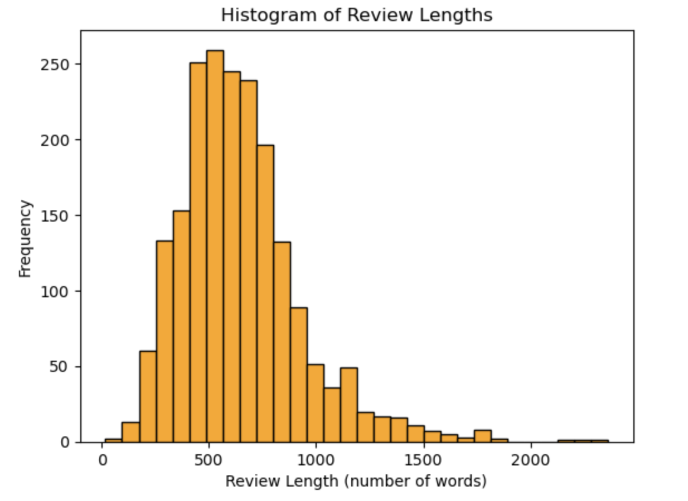
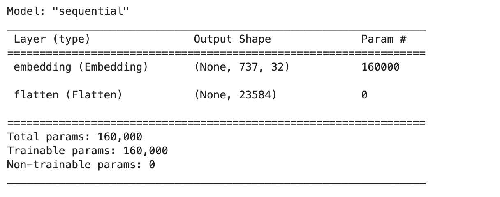
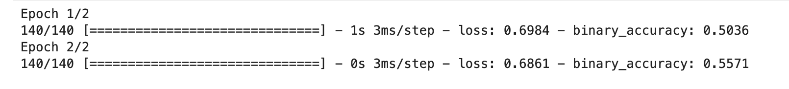

The purpose of this project is to develop and compare various deep learning models for the task of sentiment analysis on textual reviews. Sentiment analysis is a crucial task in natural language processing that involves determining the emotional tone behind a body of text. This is particularly useful in scenarios where businesses gauge customer reactions and understand their content through feedback and reviews.
The objective of this project is to implement and evaluate three different neural network architectures—Multi-Layer Perceptrons (MLP), Convolutional Neural Networks (CNN), and Long Short-Term Memory Networks (LSTM)—to classify text reviews into positive or negative sentiments.
#Importing the necessary libraries
import os
import re
import pandas as pd
import numpy as np
import matplotlib.pyplot as plt
from collections import Counter
from tensorflow.keras.models import Sequential
from tensorflow.keras.layers import Embedding, Flatten, Dense, Dropout, Conv1D, MaxPooling1D, LSTM
from tensorflow.keras.preprocessing.sequence import pad_sequences
from tensorflow.keras.utils import to_categorical
from tensorflow.keras.optimizers import Adam
from tensorflow.keras.losses import BinaryCrossentropy
from tensorflow.keras.metrics import BinaryAccuracy
os.environ['TF_CPP_MIN_LOG_LEVEL'] = '2'
data = '../Data'
negative = os.path.join(data, 'neg')
positive = os.path.join(data, 'pos')
def read_files(directory, start_id, end_id):
data = []
for filename in sorted(os.listdir(directory))[start_id:end_id]:
if filename.endswith('.txt'):
with open(os.path.join(directory, filename), 'r', encoding='utf-8') as file:
data.append(file.read())
return data
I utilize the above Python script to read textual data from specified directories for sentiment analysis. The data variable specifies the base directory containing the data. The negative and positive variables are paths that lead to subdirectories containing negative and positive text files, respectively. The function read_files is designed to read and compile text files from these directories. It accepts parameters for the directory path, and the range of file indices (start_id to end_id) to read. This function iterates over a sorted list of files in the given directory, reading only text files (filename.endswith('.txt')) within the specified index range. Each file’s contents are read and added to a list, which is then returned. This setup allows for structured data collection, which is essential for the subsequent stages of sentiment analysis where these texts are classified as either positive or negative based on their content.
train_neg = read_files(negative, 0, 700)
train_pos = read_files(positive, 0, 700)
test_neg = read_files(negative, 700, 1000)
test_pos = read_files(positive, 700, 1000)
train_neg and train_pos are variables that store the negative and positive reviews, respectively, for training the model. These reviews are read from a predefined dataset, where the first 700 files in both the negative (negative) and positive (positive) directories are used for training. Similarly, test_neg and test_pos are used to store negative and positive reviews for testing the models. These reviews are selected from files numbered 700 to 1000 in their respective directories. This structured separation helps in evaluating the models effectively by training on a significant portion of the data and then testing on a different set to ensure the model's performance and generalization capabilities.
def clean_text(texts):
cleaned_texts = []
for text in texts:
text = re.sub(r'[^\w\s]', '', text) # Removing punctuation
text = re.sub(r'\d+', '', text) # Removing numbers
cleaned_texts.append(text)
return cleaned_texts
train_neg = clean_text(train_neg)
train_pos = clean_text(train_pos)
test_neg = clean_text(test_neg)
test_pos = clean_text(test_pos)
Implemented a text cleaning function named clean_text to preprocess our dataset, which includes reviews categorized as positive or negative. This function takes a list of text strings as input and performs two main operations for cleaning: it first removes all punctuation characters to simplify the text, and then eliminates all numeric characters to focus solely on textual data. Each cleaned text string is then added to a new list called cleaned_texts, which is returned by the function. We apply this cleaning process to both our training and testing datasets for negative and positive reviews, ensuring that our data is uniform and ready for further analysis involving neural network models.
train_texts = train_neg + train_pos
test_texts = test_neg + test_pos
train_labels = [-1] * len(train_neg) + [1] * len(train_pos)
test_labels = [-1] * len(test_neg) + [1] * len(test_pos)
the code provided consolidates and labels the training and testing datasets for model training and evaluation. The train_texts and test_texts variables combine negative and positive textual reviews into single lists for training and testing respectively. Similarly, train_labels and test_labels create corresponding lists of labels, where negative reviews are marked with -1 and positive reviews with 1.
all_texts = train_texts + test_texts
all_words = set()
for text in all_texts:
all_words.update(text.split())
print("Number of unique words:", len(all_words))
Output:
Number of unique words: 47037
Combining both training and testing textual data into a single list named all_texts. This aggregation allows me to process both datasets simultaneously. Next, I create an empty set called all_words to ensure that only unique words are stored, as sets inherently prevent duplicate entries. I then iterate through each combined text, splitting them into individual words and updating the all_words set with these words to capture the unique vocabulary used across all texts. Finally, I print the total count of unique words found in the entire dataset. This count is crucial as it informs us about the diversity of the language used in the texts, which is a key factor in preparing the data for training sentiment analysis models.
review_lengths = [len(text.split()) for text in all_texts]
average_length = np.mean(review_lengths)
std_dev_length = np.std(review_lengths)
print(f"Average review length: {average_length:.2f}")
print(f"Standard deviation of review lengths: {std_dev_length:.2f}")
Output:
Average review length: 644.36
Standard deviation of review lengths: 284.98
This analysis involves calculating the number of words in each review and then computing the average and standard deviation of these lengths. The code snippet first creates a list of word counts for each review using a list comprehension, which splits each review into words and measures the length. The np.mean function calculates the average number of words across all reviews, resulting in an average length of 644.36 words. Similarly, np.std helps in determining the variability or dispersion of word counts among the reviews, with a computed standard deviation of 284.98. This statistical data is crucial for understanding the consistency and range of review lengths within the dataset, which can be vital for further processing and analysis in sentiment analysis tasks.
plt.hist(review_lengths, bins=30, color='orange', edgecolor='black')
plt.title('Histogram of Review Lengths')
plt.xlabel('Review Length (number of words)')
plt.ylabel('Frequency')
plt.show()
Output:

The histogram illustrates the frequency of review lengths measured in number of words. Most reviews fall within the 300 to 400-word range, indicating this is the most common length for reviews in the dataset. There's a noticeable decline in frequency for reviews shorter than 300 words and longer than 500 words, with very few reviews exceeding 1000 words. This suggests that while reviewers typically provide moderate detail, they rarely write extremely lengthy or brief reviews. The data is right-skewed, meaning there's a tail on the right side where a small number of reviews are significantly longer than the majority.
def get_word_frequencies(texts):
word_counts = Counter()
for text in texts:
word_counts.update(text.split())
return word_counts
def rank_words_by_frequency(word_counts):
sorted_words = sorted(word_counts.items(), key=lambda x: -x[1])
word_ranks = {word: rank for rank, (word, _) in enumerate(sorted_words, 1)}
return word_ranks
def tokenize_texts(texts, word_ranks):
tokenized_texts = []
for text in texts:
tokens = [word_ranks[word] for word in text.split() if word in word_ranks]
tokenized_texts.append(tokens)
return tokenized_texts
word_counts = get_word_frequencies(all_texts)
word_ranks = rank_words_by_frequency(word_counts)
train_texts_tokenized = tokenize_texts(train_texts, word_ranks)
test_texts_tokenized = tokenize_texts(test_texts, word_ranks)
This code snippet consists of three functions to process text data for natural language processing tasks. The first function, get_word_frequencies, calculates the frequency of each word in the provided texts. The second function, rank_words_by_frequency, sorts the words based on their frequency and assigns a rank to each word. Finally, the third function, tokenize_texts, converts the texts into sequences of word ranks according to their frequency. This pipeline is useful for tasks like text classification or sentiment analysis where numerical representations of words are required for machine learning algorithms to operate efficiently.
print("Sample tokenized train text:", train_texts_tokenized[0][:20])
Output:
Sample tokenized train text: [98, 79, 1078, 3639, 129, 5, 2, 1964, 782, 3640, 3, 102, 1396, 36, 74, 55,
24, 1327, 26, 4]
print("Sample tokenized test text:", test_texts_tokenized[0][:20])
Output:
Sample tokenized test text: [1, 1820, 6, 2, 22794, 1428, 15, 8, 18, 64, 57, 1995, 33, 257, 2384, 1199,
7519, 150, 5175, 221]
L = int(np.percentile(review_lengths, 70))
truncated_padded_texts = []
for text in all_texts:
words = text.split()
truncated_length = min(len(words), L)
truncated_words = words[:truncated_length]
padded_words = truncated_words + [0] * (L - truncated_length)
truncated_padded_texts.append(padded_words)
truncated_padded_texts_array = np.array(truncated_padded_texts)
print("Shape of the data array:", truncated_padded_texts_array.shape)
Output:
Shape of the data array: (2000, 737)
print("Sample truncated and padded text:", truncated_padded_texts_array[0])
Output:
Sample truncated and padded text: ['plot' 'two' 'teen' 'couples' 'go' 'to' 'a' 'church' 'party' 'drink'
'and' 'then' 'drive' 'they' 'get' 'into' 'an' 'accident' 'one' 'of' 'the'
'guys' 'dies' 'but' 'his' 'girlfriend' 'continues' 'to' 'see' 'him' 'in'
'her' 'life' 'and' 'has' 'nightmares' 'whats' 'the' 'deal' 'watch' 'the'
'movie' 'and' 'sorta' 'find' 'out' 'critique' 'a' 'mindfuck' 'movie'
'for' 'the' 'teen' 'generation' 'that' 'touches' 'on' 'a' 'very' 'cool'
'idea' 'but' 'presents' 'it' 'in' 'a' 'very' 'bad' 'package' 'which' 'is'
'what' 'makes' 'this' 'review' 'an' 'even' 'harder' 'one' 'to' 'write'
'since' 'i' 'generally' 'applaud' 'films' 'which' 'attempt' 'to' 'break'
'the' 'mold' 'mess' 'with' 'your' 'head' 'and' 'such' 'lost' 'highway'
'memento' 'but' 'there' 'are' 'good' 'and' 'bad' 'ways' 'of' 'making'
'all' 'types' 'of' 'films' 'and' 'these' 'folks' 'just' 'didnt' 'snag'
'this' 'one' 'correctly' 'they' 'seem' 'to' 'have' 'taken' 'this'
'pretty' 'neat' 'concept' 'but' 'executed' 'it' 'terribly' 'so' 'what'
'are' 'the' 'problems' 'with' 'the' 'movie' 'well' 'its' 'main' 'problem'
'is' 'that' 'its' 'simply' 'too' 'jumbled' 'it' 'starts' 'off' 'normal'
'but' 'then' 'downshifts' 'into' 'this' 'fantasy' 'world' 'in' 'which'
'you' 'as' 'an' 'audience' 'member' 'have' 'no' 'idea' 'whats' 'going'
'on' 'there' 'are' 'dreams' 'there' 'are' 'characters' 'coming' 'back'
'from' 'the' 'dead' 'there' 'are' 'others' 'who' 'look' 'like' 'the'
'dead' 'there' 'are' 'strange' 'apparitions' 'there' 'are'
'disappearances' 'there' 'are' 'a' 'looooot' 'of' 'chase' 'scenes'
'there' 'are' 'tons' 'of' 'weird' 'things' 'that' 'happen' 'and' 'most'
'of' 'it' 'is' 'simply' 'not' 'explained' 'now' 'i' 'personally' 'dont'
'mind' 'trying' 'to' 'unravel' 'a' 'film' 'every' 'now' 'and' 'then'
'but' 'when' 'all' 'it' 'does' 'is' 'give' 'me' 'the' 'same' 'clue'
'over' 'and' 'over' 'again' 'i' 'get' 'kind' 'of' 'fed' 'up' 'after' 'a'
'while' 'which' 'is' 'this' 'films' 'biggest' 'problem' 'its' 'obviously'
'got' 'this' 'big' 'secret' 'to' 'hide' 'but' 'it' 'seems' 'to' 'want'
'to' 'hide' 'it' 'completely' 'until' 'its' 'final' 'five' 'minutes'
'and' 'do' 'they' 'make' 'things' 'entertaining' 'thrilling' 'or' 'even'
'engaging' 'in' 'the' 'meantime' 'not' 'really' 'the' 'sad' 'part' 'is'
'that' 'the' 'arrow' 'and' 'i' 'both' 'dig' 'on' 'flicks' 'like' 'this'
'so' 'we' 'actually' 'figured' 'most' 'of' 'it' 'out' 'by' 'the'
'halfway' 'point' 'so' 'all' 'of' 'the' 'strangeness' 'after' 'that'
'did' 'start' 'to' 'make' 'a' 'little' 'bit' 'of' 'sense' 'but' 'it'
'still' 'didnt' 'the' 'make' 'the' 'film' 'all' 'that' 'more'
'entertaining' 'i' 'guess' 'the' 'bottom' 'line' 'with' 'movies' 'like'
'this' 'is' 'that' 'you' 'should' 'always' 'make' 'sure' 'that' 'the'
'audience' 'is' 'into' 'it' 'even' 'before' 'they' 'are' 'given' 'the'
'secret' 'password' 'to' 'enter' 'your' 'world' 'of' 'understanding' 'i'
'mean' 'showing' 'melissa' 'sagemiller' 'running' 'away' 'from' 'visions'
'for' 'about' 'minutes' 'throughout' 'the' 'movie' 'is' 'just' 'plain'
'lazy' 'okay' 'we' 'get' 'it' 'there' 'are' 'people' 'chasing' 'her'
'and' 'we' 'dont' 'know' 'who' 'they' 'are' 'do' 'we' 'really' 'need'
'to' 'see' 'it' 'over' 'and' 'over' 'again' 'how' 'about' 'giving' 'us'
'different' 'scenes' 'offering' 'further' 'insight' 'into' 'all' 'of'
'the' 'strangeness' 'going' 'down' 'in' 'the' 'movie' 'apparently' 'the'
'studio' 'took' 'this' 'film' 'away' 'from' 'its' 'director' 'and'
'chopped' 'it' 'up' 'themselves' 'and' 'it' 'shows' 'there' 'mightve'
'been' 'a' 'pretty' 'decent' 'teen' 'mindfuck' 'movie' 'in' 'here'
'somewhere' 'but' 'i' 'guess' 'the' 'suits' 'decided' 'that' 'turning'
'it' 'into' 'a' 'music' 'video' 'with' 'little' 'edge' 'would' 'make'
'more' 'sense' 'the' 'actors' 'are' 'pretty' 'good' 'for' 'the' 'most'
'part' 'although' 'wes' 'bentley' 'just' 'seemed' 'to' 'be' 'playing'
'the' 'exact' 'same' 'character' 'that' 'he' 'did' 'in' 'american'
'beauty' 'only' 'in' 'a' 'new' 'neighborhood' 'but' 'my' 'biggest'
'kudos' 'go' 'out' 'to' 'sagemiller' 'who' 'holds' 'her' 'own'
'throughout' 'the' 'entire' 'film' 'and' 'actually' 'has' 'you' 'feeling'
'her' 'characters' 'unraveling' 'overall' 'the' 'film' 'doesnt' 'stick'
'because' 'it' 'doesnt' 'entertain' 'its' 'confusing' 'it' 'rarely'
'excites' 'and' 'it' 'feels' 'pretty' 'redundant' 'for' 'most' 'of' 'its'
'runtime' 'despite' 'a' 'pretty' 'cool' 'ending' 'and' 'explanation' 'to'
'all' 'of' 'the' 'craziness' 'that' 'came' 'before' 'it' 'oh' 'and' 'by'
'the' 'way' 'this' 'is' 'not' 'a' 'horror' 'or' 'teen' 'slasher' 'flick'
'its' 'just' 'packaged' 'to' 'look' 'that' 'way' 'because' 'someone' 'is'
'apparently' 'assuming' 'that' 'the' 'genre' 'is' 'still' 'hot' 'with'
'the' 'kids' 'it' 'also' 'wrapped' 'production' 'two' 'years' 'ago' 'and'
'has' 'been' 'sitting' 'on' 'the' 'shelves' 'ever' 'since' 'whatever'
'skip' 'it' 'wheres' 'joblo' 'coming' 'from' 'a' 'nightmare' 'of' 'elm'
'street' 'blair' 'witch' 'the' 'crow' 'the' 'crow' 'salvation' 'lost'
'highway' 'memento' 'the' 'others' 'stir' 'of' 'echoes' '0' '0' '0' '0'
'0' '0' '0' '0' '0' '0' '0' '0' '0' '0' '0' '0' '0' '0' '0' '0' '0' '0'
'0' '0' '0' '0' '0' '0' '0' '0' '0' '0' '0' '0' '0' '0' '0' '0' '0' '0'
'0' '0' '0' '0' '0' '0' '0' '0' '0']
This code snippet processes a collection of movie reviews. It first calculates a length threshold based on the 70th percentile of review lengths. Then, it truncates each review to this threshold, padding shorter ones with zeros. This prepares the data for analysis or modeling. Finally, it converts the processed reviews into a NumPy array. The sample output demonstrates a truncated and padded review, ensuring uniformity in length for further analysis, such as sentiment analysis or classification tasks.
VOCAB_SIZE = 5000
EMBEDDING_DIM = 32
MAX_LENGTH = L
tokenized_texts = train_texts_tokenized + test_texts_tokenized
tokenized_texts = pad_sequences(tokenized_texts, maxlen=MAX_LENGTH, padding='post', truncating='post',
value=0)
filtered_texts = np.where(tokenized_texts < VOCAB_SIZE, tokenized_texts, 0)
model=Sequential([Embedding(input_dim=VOCAB_SIZE, output_dim=EMBEDDING_DIM,
input_length=MAX_LENGTH), Flatten()]) model.summary()
Output:

This code sets up a neural network model for text classification. It uses tokenized texts from both training and testing data, pads them to a maximum length 'L', and filters out tokens exceeding the vocabulary size of 5000. The model architecture consists of an embedding layer followed by a flattening layer. The embedding layer converts tokenized inputs into dense vectors of fixed size (32 in this case), while the flattening layer reshapes the output for input into subsequent dense layers. This model aims to learn meaningful representations of words within the specified vocabulary size and embedding dimension for classification tasks.
model = Sequential([
Embedding(input_dim=VOCAB_SIZE, output_dim=EMBEDDING_DIM, input_length=MAX_LENGTH),
Flatten(),
Dropout(0.2),
Dense(50, activation='relu'),
Dropout(0.5),
Dense(50, activation='relu'),
Dropout(0.5),
Dense(50, activation='relu'),
Dropout(0.5),
Dense(1, activation='sigmoid')
])
model.compile(optimizer=Adam(), loss=BinaryCrossentropy(), metrics=[BinaryAccuracy()])
train_labels_binary = [0 if label == -1 else 1 for label in train_labels]
test_labels_binary = [0 if label == -1 else 1 for label in test_labels]
train_labels_array = np.array(train_labels_binary)
test_labels_array = np.array(test_labels_binary)
history = model.fit(filtered_texts[:len(train_texts)], train_labels_array, epochs=2, batch_size=10,
verbose=1)
Output:

This code defines a Sequential model in Keras for text classification. It starts with an embedding layer to convert words to dense vectors, followed by flattening and dropout layers to prevent overfitting. Then, it has three dense layers with ReLU activation functions and dropout for non-linearity and regularization. Finally, it outputs a binary classification using a sigmoid activation function. The model is compiled with Adam optimizer and binary cross-entropy loss. Training labels are converted to binary format, and the model is trained on the filtered texts with a batch size of 10 for 2 epochs.
train_loss_cnn, train_accuracy_cnn = model_cnn.evaluate(filtered_texts[:len(train_texts)],
train_labels_array, verbose=0)
print("Training Accuracy: {:.2f}%".format(train_accuracy_cnn * 100))
Output:
Training Accuracy: 63.14%
test_loss_cnn, test_accuracy_cnn = model_cnn.evaluate(filtered_texts[len(train_texts):],
test_labels_array, verbose=0)
print("Testing Accuracy: {:.2f}%".format(test_accuracy_cnn * 100))
Output:
Testing Accuracy: 55.67%
The convolutional neural network (CNN) model achieved a training accuracy of 63.14%, indicating that it correctly classified 63.14% of the training data samples. On the test set, the CNN model demonstrated a slightly lower accuracy of 55.67%, suggesting that it generalized reasonably well to unseen data but may benefit from further optimization or regularization techniques to improve its performance.
model_lstm = Sequential([
Embedding(input_dim=VOCAB_SIZE, output_dim=EMBEDDING_DIM, input_length=MAX_LENGTH),
LSTM(32, dropout=0.2, recurrent_dropout=0.2),
Dense(256, activation='relu'),
Dropout(0.2),
Dense(1, activation='sigmoid')
])
model_lstm.compile(optimizer=Adam(), loss=BinaryCrossentropy(), metrics=[BinaryAccuracy()])
history_lstm = model_lstm.fit(
filtered_texts[:len(train_texts)],
train_labels_array,
epochs=50,
batch_size=10,
verbose=1
)
This code defines a Long Short-Term Memory (LSTM) neural network model for text classification using Keras with TensorFlow backend. It starts with an Embedding layer to convert input text into dense vectors. Then, an LSTM layer with dropout is added to learn temporal patterns in the text data. Followed by a Dense layer with ReLU activation to capture non-linear relationships, and a dropout layer to prevent overfitting. Finally, a Dense layer with sigmoid activation produces the output prediction. The model is compiled with the Adam optimizer and binary cross-entropy loss function. It's trained on the provided text data with corresponding labels for 50 epochs using a batch size of 10.
train_loss_lstm, train_accuracy_lstm = model_lstm.evaluate(filtered_texts[:len(train_texts)],
train_labels_array, verbose=0)
print("LSTM Training Accuracy: {:.2f}%".format(train_accuracy_lstm * 100))
Output:
LSTM Training Accuracy: 72.71%
test_loss_lstm, test_accuracy_lstm = model_lstm.evaluate(filtered_texts[len(train_texts):],
test_labels_array, verbose=0)
print("LSTM Testing Accuracy: {:.2f}%".format(test_accuracy_lstm * 100))
Output:
LSTM Testing Accuracy: 56.33%
The LSTM model achieved a training accuracy of 72.71%, indicating its ability to correctly classify training data. However, its testing accuracy was notably lower at 56.33%, suggesting a performance drop when faced with unseen data. This performance gap may indicate overfitting, where the model learns to memorize the training data rather than generalize well to new examples. Regularization techniques or adjusting the model architecture could potentially mitigate this issue and improve overall performance on unseen data.
The exploration of different neural network architectures in this sentiment analysis project reveals significant insights into how various models handle text data. LSTM stood out in handling complex patterns over longer sequences, making it particularly suitable for detailed sentiment analysis in large datasets. Future work could explore combining these models into an ensemble method to further enhance performance and reliability.